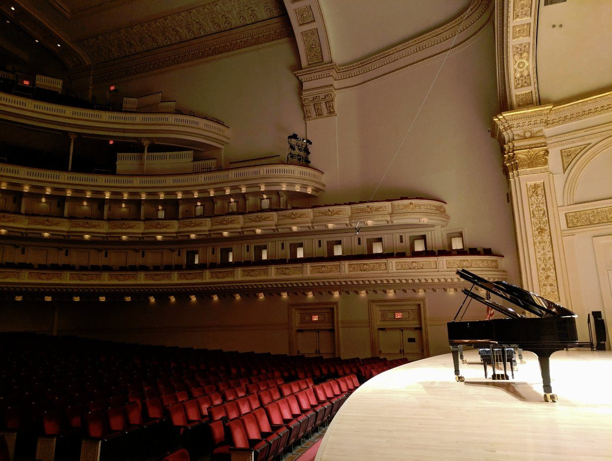
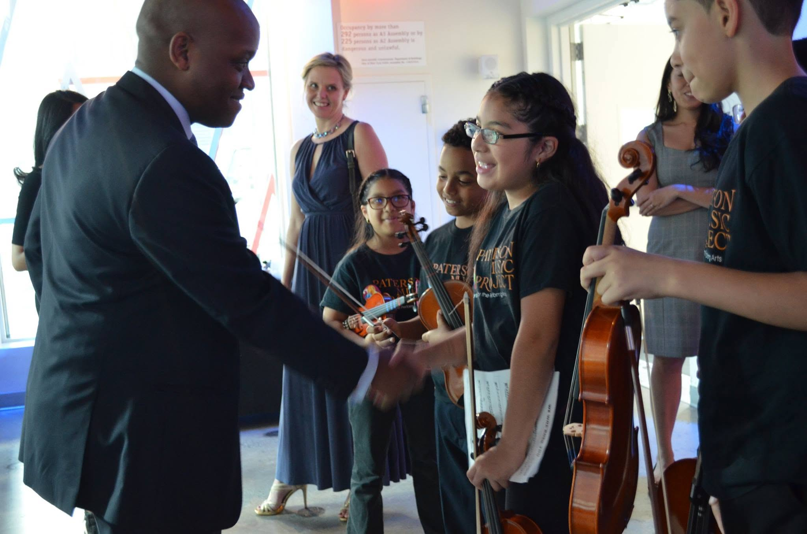
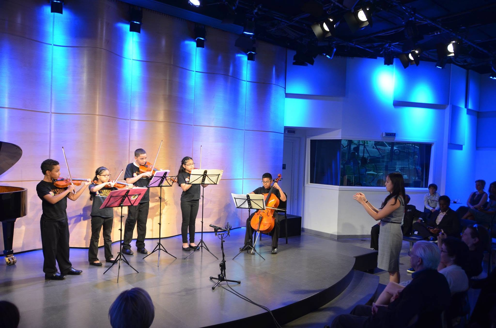

IMPACT
For more than a decade, We've Got Rhythm has expanded access to music education for hundreds of young people through free instruments, special concert experiences, and meaningful opportunities at some of New York's most celebrated cultural institutions.

More Than a Concert Ticket
#RhythmSupport is designed to remove the practical barriers that can keep young people from experiencing world-class live performance. We provide complimentary concert access, transportation when needed, and opportunities to meet artists backstage at venues such as Carnegie Hall.
Exposure
Young people experience extraordinary performances in the historic spaces where musical excellence is celebrated.
Connection
Backstage conversations make accomplished artists feel more accessible and human, helping demystify the path behind the performance.
Possibility
These experiences can expand a young person’s sense of where they belong, what they can pursue, and what may be possible for their own future.

Always Free to Participate
Every WGR program, from donated instruments and concert tickets to transportation when needed, is provided at no cost to the young people and families we serve.
Cost should never stand between a young person and the opportunity to experience, learn, and grow through music.
SPONSOR A YOUNG PERSON’S EXPERIENCE
A Student on Stage
From their very first practice note to the concert spotlight. We build the bridge that makes it possible.
Intimate Backstage Moments
The signature of #RhythmSupport isn't the seat. It's the door at the end of the night.

THE PERFORMANCE
Experiencing Excellence
Students encounter world-class musicianship in one of the world's most celebrated concert halls. Hearing extraordinary performers live, in a space built for that level of artistry, makes excellence immediate in a way recordings and classrooms cannot.

AFTER THE OVATION
The Conversation
Backstage, the distance between audience and artist disappears. Young people can ask questions, share their own interests, and hear directly from accomplished performers about preparation, persistence, nerves, and the paths that brought them to the stage.

THE LASTING IMPACT
The Ride Home
The experience continues long after the final applause. On the ride home, students carry with them more than programs and photographs: a closer view of artistic excellence, a memory shared with their peers and families, and a broader sense of what may be possible.
What Our Work Delivers
Impact is not measured only in applause. It is reflected in the confidence, access, and sense of possibility young people carry with them afterward.
FREE PARTICIPATION
WGR programs are provided at no cost to the young people and families we serve. Instruments, concert access, transportation when needed, and other program experiences are made possible through the support of our donors and partners.
BEATS INSTRUMENT ACCESS
Through BEATS (Bringing Equipment & Access To Students), donated violins, cellos, guitars, keyboards, wind instruments, and other instruments are placed directly into the hands of young people who need them.
Owning an instrument gives a student the freedom to practice beyond the classroom, build confidence through repetition, and develop a deeper relationship with music.
DIRECT ARTIST CONNECTION
#RhythmSupport extends beyond the performance itself. Backstage conversations give young people the opportunity to meet accomplished artists in person, ask questions, and encounter the people behind the performance.
These moments can make extraordinary achievement feel more human, accessible, and possible.
COMMUNITY PARTNERSHIPS
Since our foundation, WGR has worked with schools, music educators, families, and community organizations to identify where access is limited and connect young people with instruments, performances, and other meaningful opportunities.
From First Notes to New Possibilities
Whether receiving a first instrument, attending a world-class performance, or meeting an inspiring artist, each experience can open another door.
We help make those opportunities possible.